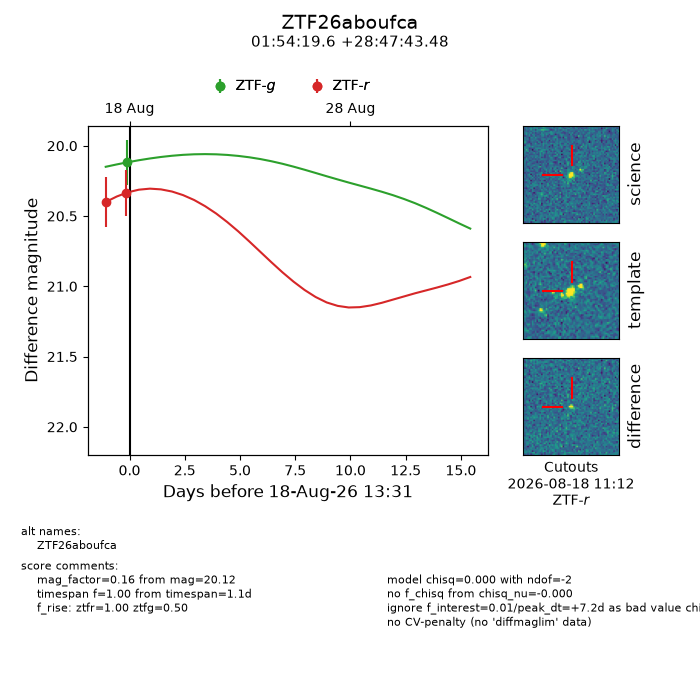
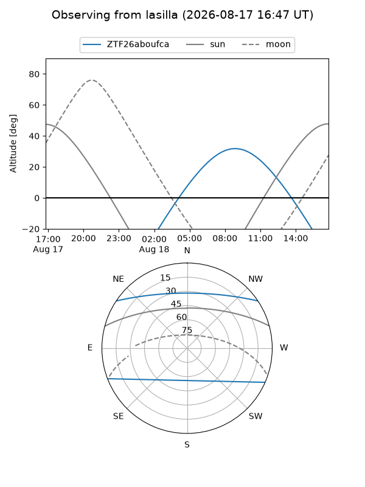
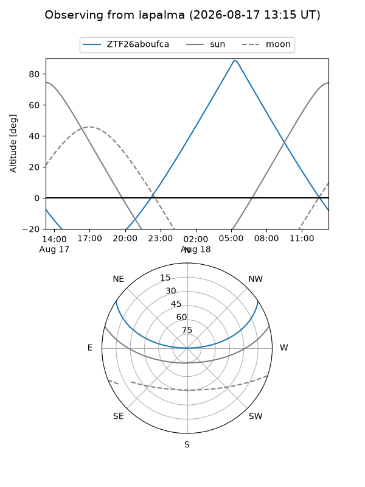
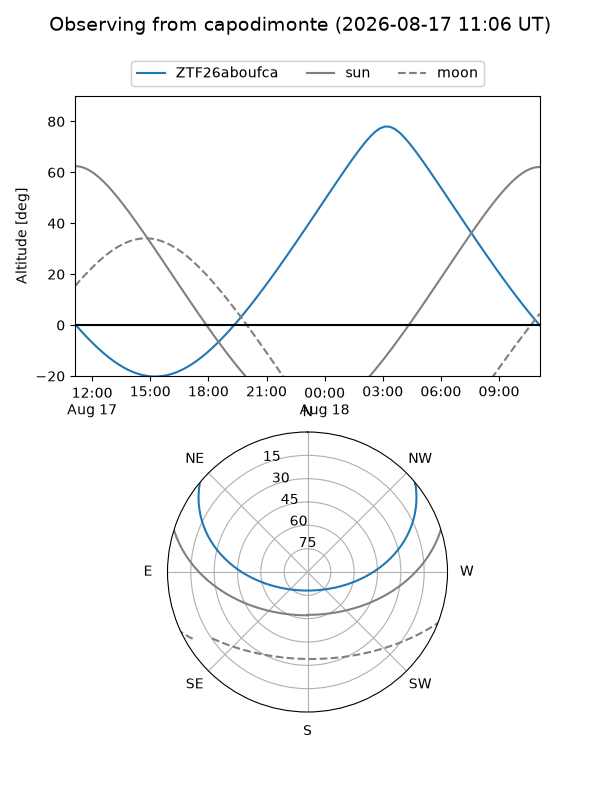
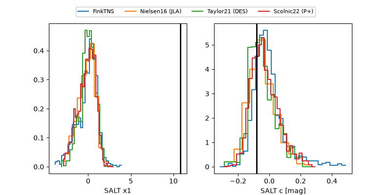

ZTF26aboufca
Target ZTF26aboufca at 2026-08-18 13:35
Aliases and brokers:
FINK-ZTF: ztf.fink-portal.org/ZTF26aboufca
Lasair-ZTF: lasair-ztf.lsst.ac.uk/objects/ZTF26aboufca
ALeRCE-ZTF: alerce.online/object/ZTF26aboufca
Direct TNS query: direct search
alt names
ZTF26aboufca (ztf,fink_ztf)
Coordinates:
equatorial (ra, dec) = 28.5818,+28.79541
equatorial (HMS+DMS) = 01:54:19.62,+28:47:43.48
galactic (l, b) = (139.2079,-32.08094)
Flags:
peak dt: +7.2
Photometry:
last ztfg=20.12, ztfr=20.34
1 ztfg, 2 ztfr detections
Lightcurve

Visibility



Additional plots
